Presentación de evidencias de desarrollo, indicadores de logro y reflexión del aprendizaje del módulo.
Introducción:
El presente portafolio reúne evidencias del trabajo docente desarrollado en Educación Parvularia, en concordancia con el nuevo Marco Curricular de la Primera Infancia. En él se documentan los procesos de diagnóstico inicial, planificación pedagógica, evaluación del desarrollo y aprendizaje, así como las adecuaciones curriculares implementadas para responder a las características, intereses, capacidades y necesidades de cada niño, promoviendo una educación inclusiva, accesible y equitativa.
Asimismo, se evidencian las estrategias de comunicación y colaboración permanente con las familias y el equipo docente, fortaleciendo la corresponsabilidad en el proceso educativo. En conjunto, las evidencias reflejan una práctica pedagógica orientada al desarrollo integral de los niños, mediante experiencias de aprendizaje significativas y pertinentes.
Indicador de logro: 1.1. Elaborar y utilizar el expediente de los niños, realizando un diagnóstico inicial que caracteriza, con base en sus particularidades: intereses, capacidades y contextos, empleando herramientas y estrategias accesibles y equitativas para fundamentar la planificación de experiencias pedagógicas que promuevan el desarrollo y aprendizaje de todos los niños, en colaboración con las familias y el equipo docente.
Reflexión sobre el indicador: En este modulo aprendí a consolidar muchos aspectos, como lo es el diagnostico al inicio de año para comprender como entran los niños al nivel escolar en este caso su primera vez. La caracterización individual y grupal que se realiza al inicio para reconocer al grupo y a cada niño, debe ser continua, esto me permitió desarrollar actividades en las 2 semanas de adaptación, mi punto de partida para poder realizar los procesos de desarrollo, las estrategias, recursos. Todos esos documentos me han servido para crear el expediente de cada estudiante con información relevante como la ficha de matricula, cartilla de vacunación, Dui de responsables, contexto familiar.
Evidencia 1.1
Clic para expandir documento
Expediente de estudiante
Utiliza los controles multimedia
Indicador 1.2
Indicador de logro: 1.2. Diseñar e implementar la planificación a largo, mediano (jornalización) y corto plazo (planificación semanal), alineada con el nuevo Marco Curricular de la Primera Infancia, basada en la caracterización de niños de Primera Infancia e integrando procesos de desarrollo y aprendizaje que garanticen entornos accesibles y equitativos, utilizando múltiples formas de representación, expression y motivación para promover la participación activa, en colaboración con las familias y el equipo docente.
Reflexión sobre el indicador: Para poder iniciar con mi jornalizacion de este año tome en consideración el calendario escolar y las fechas institucionales, luego di prioridad a las características individuales de cada estudiante para poder realizar mi planificación semanal, utilice los programas de desarrollo y aprendizaje de Parvularia 4, los 5 ámbitos de experiencia con sus núcleos pedagógicos, los descriptores de progresión, para los procesos de desarrollo y aprendizaje. El eje central es el juego promoviendo el uso de las zonas de desarrollo, talleres y proyectos, logrando planificar la rutina diaria, anticipando los materiales y apoyos diferenciados.
Evidencia 1.2
Clic para expandir documento
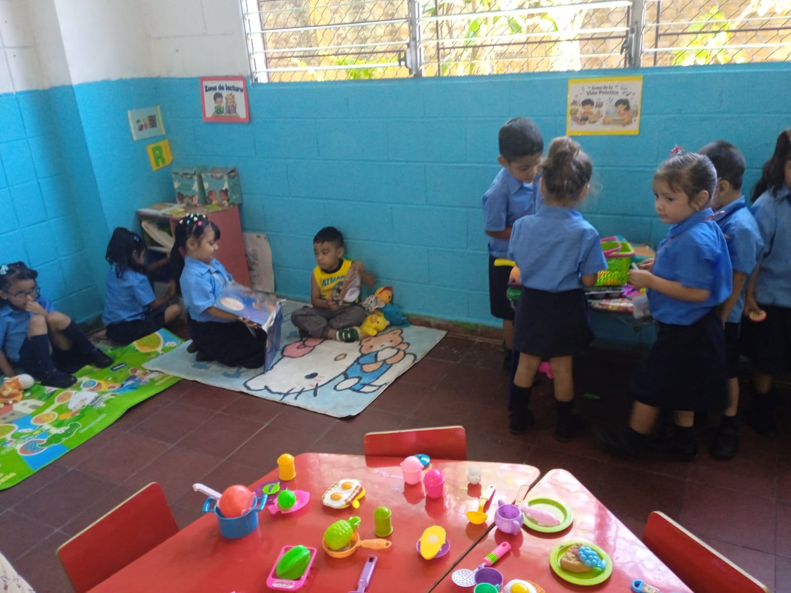
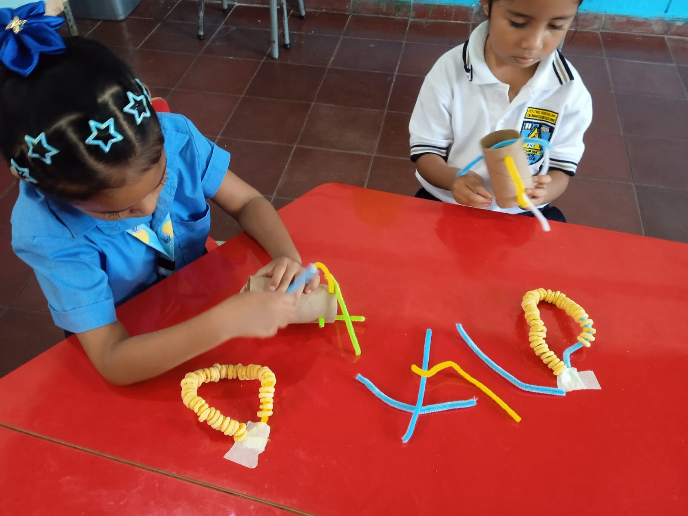
Clic para ampliar fotografías
Indicador 2.1
Indicador de logro: 2.1. Implementar procesos de evaluación del desarrollo y aprendizaje en los niños de la Primera Infancia a partir de los descriptores de progresión, en los que utilice mecanismos e instrumentos de valoración con intencionalidad pedagógica, y en los que registre y analice el progreso de manera sistemática y flexible en momentos clave; y, asimismo, lleve a cabo adecuaciones curriculares inclusivas y equitativas.
Reflexión sobre el indicator: Evalue observando y escuchando con intención pedagógica y se comparte información con las familias para el acompañamiento en casa, esto me permite evaluar los avances. Presento un anecdotario que permite evidenciar el comportamiento de un estudiante, también el registro fotográficos de las experiencias, juego, exploration e interacción de los estudiantes y un ejemplo de rubrica que utilice para el proyecto de cuenta cuentos realizado por los padres de familia.
Evidencia 2.1
Clic para expandir documento
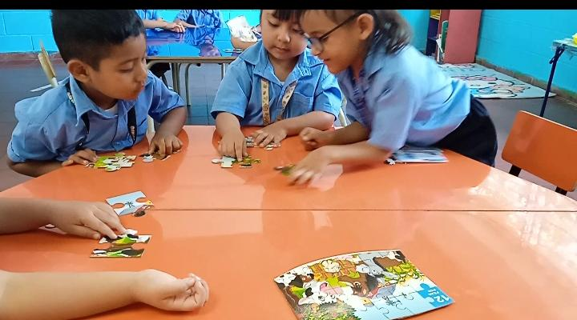
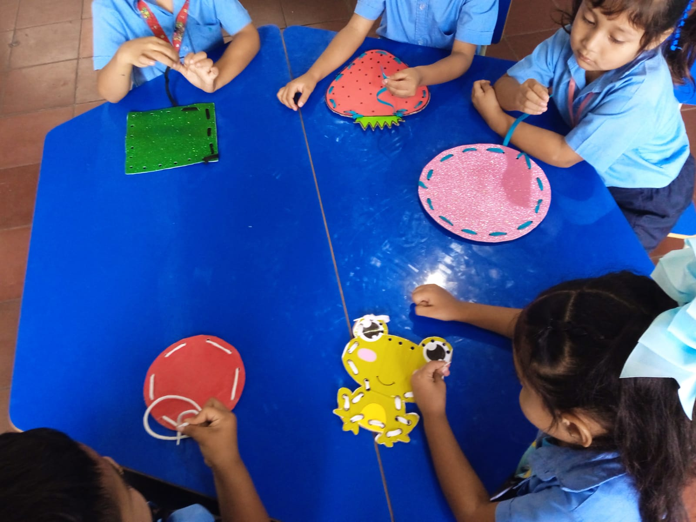
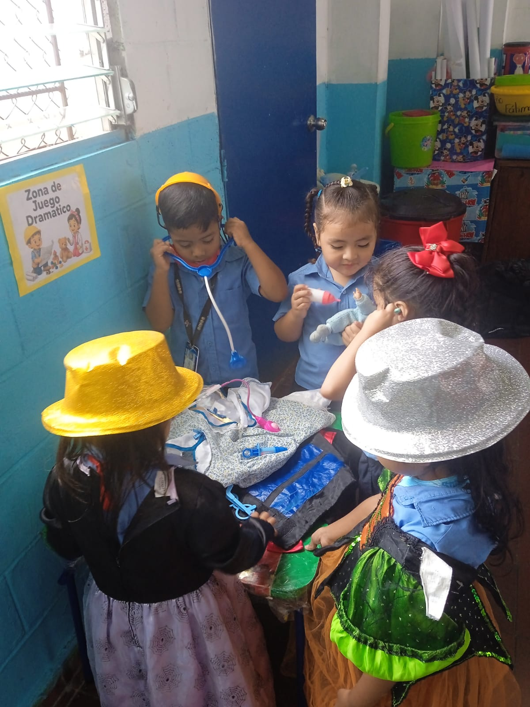
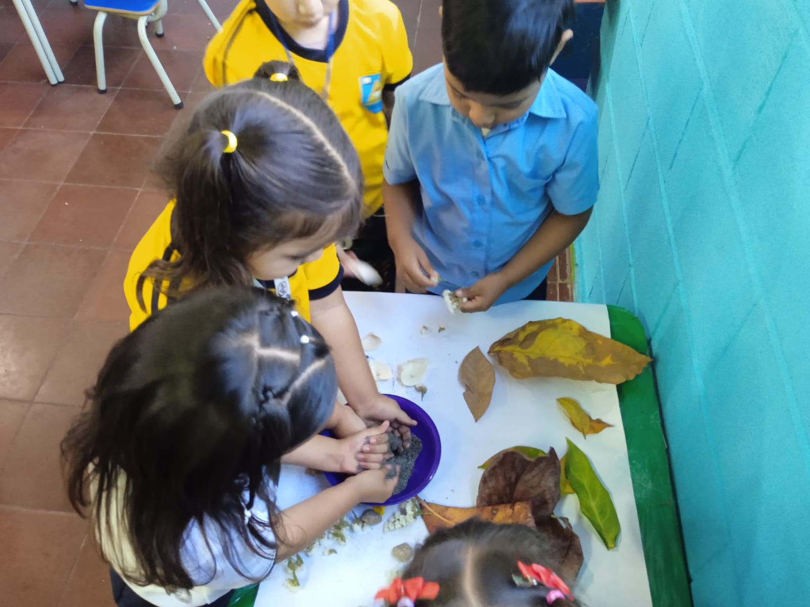
Clic para ampliar fotografías
Indicador 3.1
Indicador de logro: 3.1 Diseñar estrategias de colaboración, orientación y comunicación abierta y permanente con las familias, mediante el acompañamiento docente (entrevistas, reuniones grupales, informes de progreso y participación en actividades escolares) que fortalezcan la corresponsabilidad en el proceso educativo y el desarrollo integral de niños de la Primera Infancia.
Reflexión sobre el indicador: La formación enfatiza la importancia de la participación de la famila en los procesos de desarrollo. Se esta trabajando con los padres de familia, teniendo ese vinculo afectivo con la escuela. La participación de ellos en asambleas generales, reuniones con pequeños grupos para organizar actividades, presentaciones de los padres dentro del aula con charlas de higiene, cuenta cuentos, también pequeñas actividades en casa, participación en mañana recreativa de primera infancia.
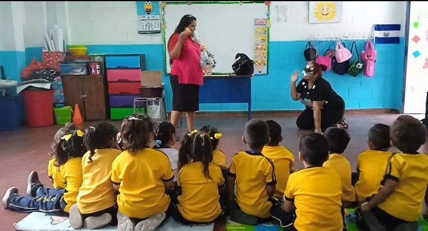
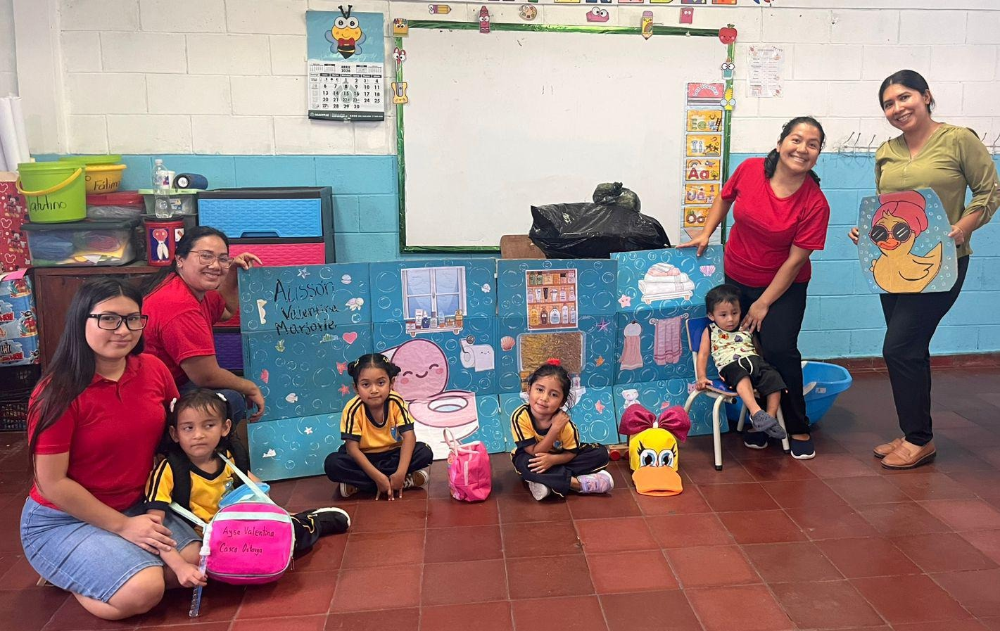
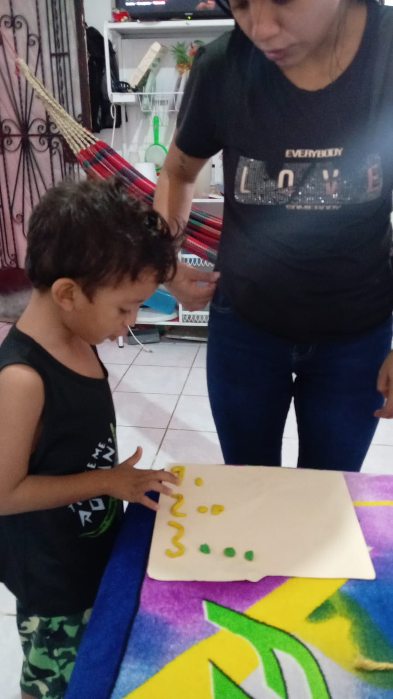
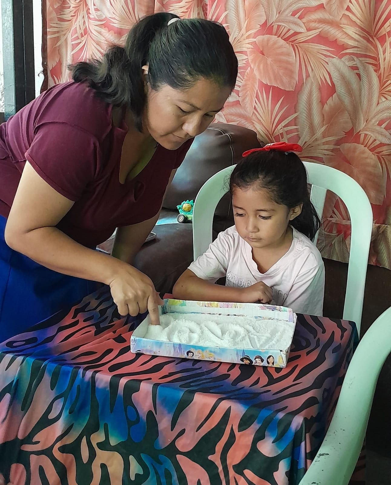
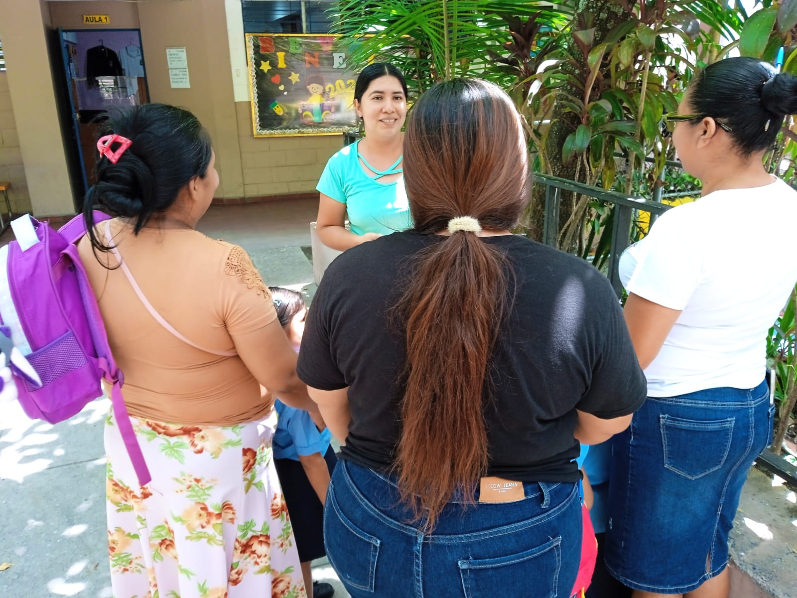
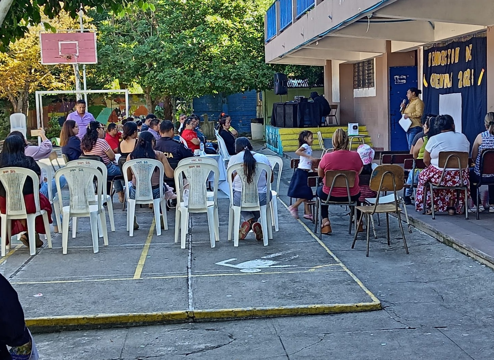
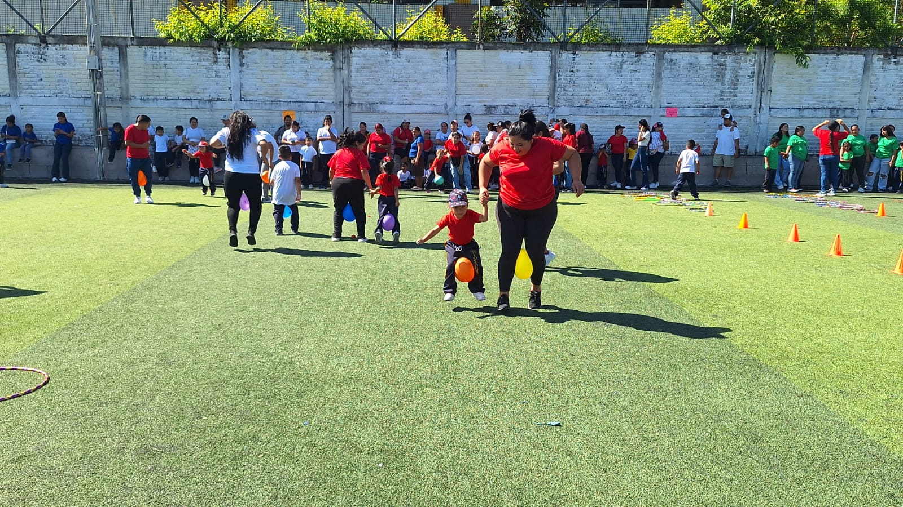
Clic para ampliar fotografías
Reflexión Pedagógica Final
Conclusión del proceso:
La elaboración de este portafolio fortaleció mi práctica docente en parvularia, permitiéndome comprender la importancia de realizar un diagnóstico oportuno, planificar de manera intencionada, evaluar continuamente los procesos de desarrollo y aprendizaje, y mantener una comunicación constante con las familias. Cada una de estas acciones contribuye a brindar una atención más pertinente a las necesidades e intereses de los niños. Como docente, reafirmo mi compromiso de continuar promoviendo experiencias de aprendizaje significativas, inclusivas y centradas en el juego, fortaleciendo el trabajo colaborativo con las familias y el equipo docente para favorecer el desarrollo integral de cada niño.